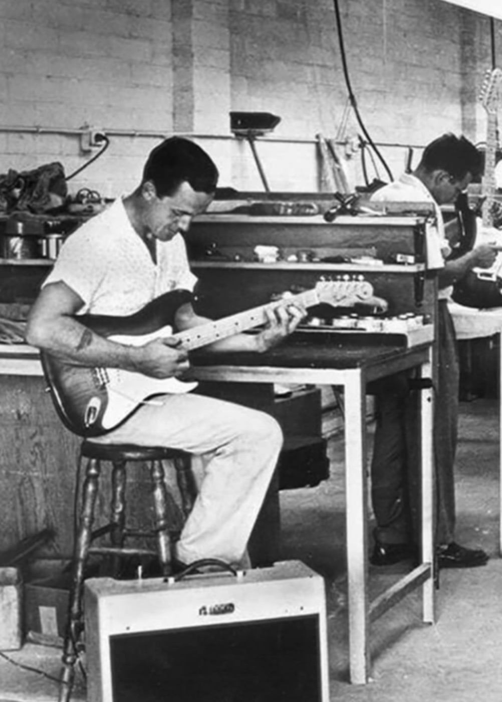
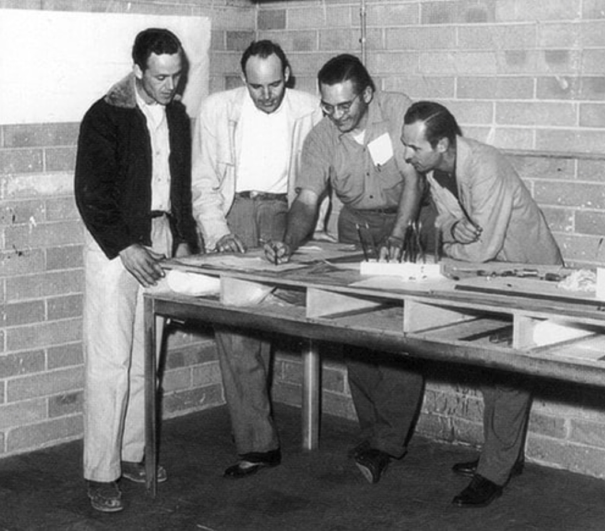
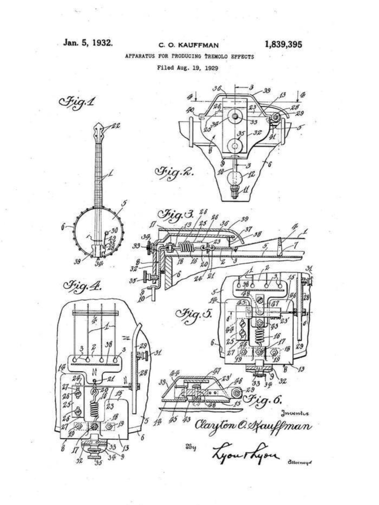
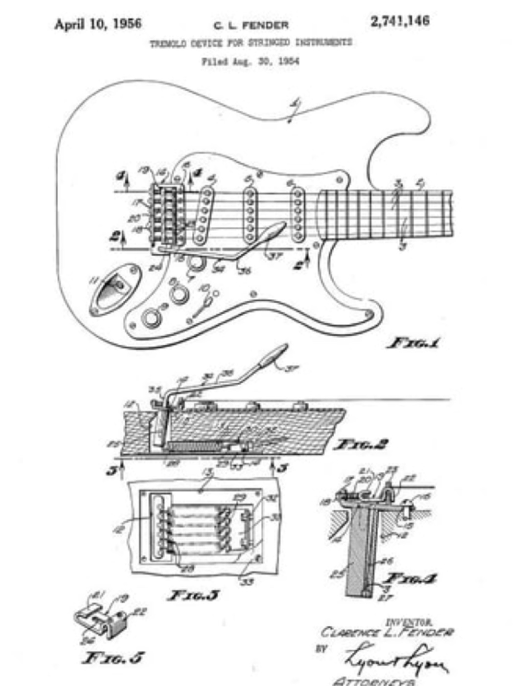
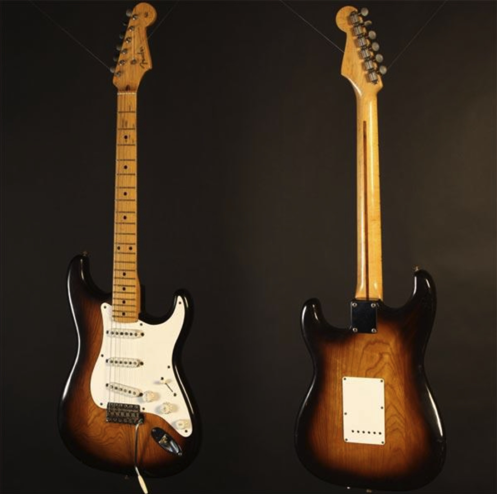
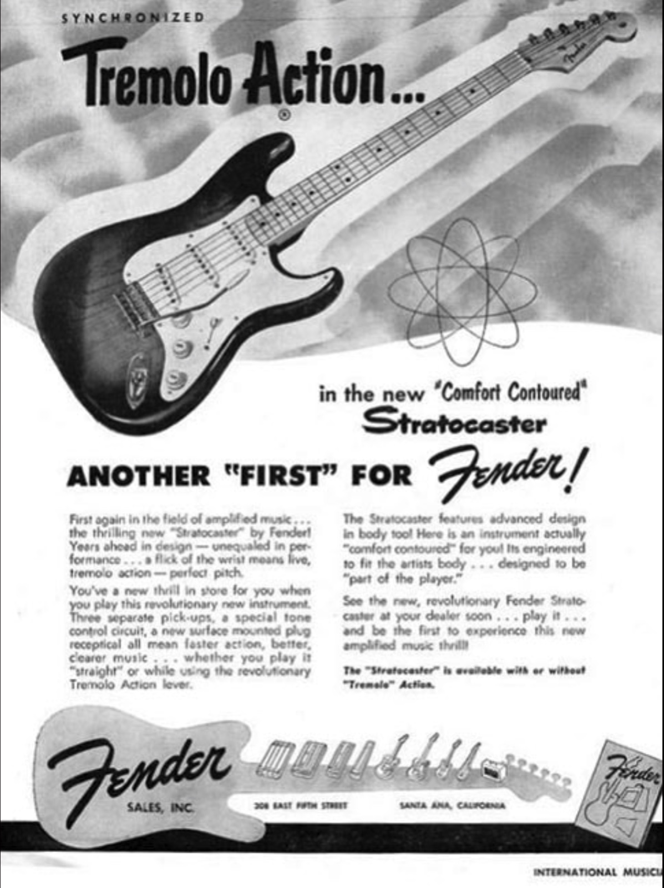
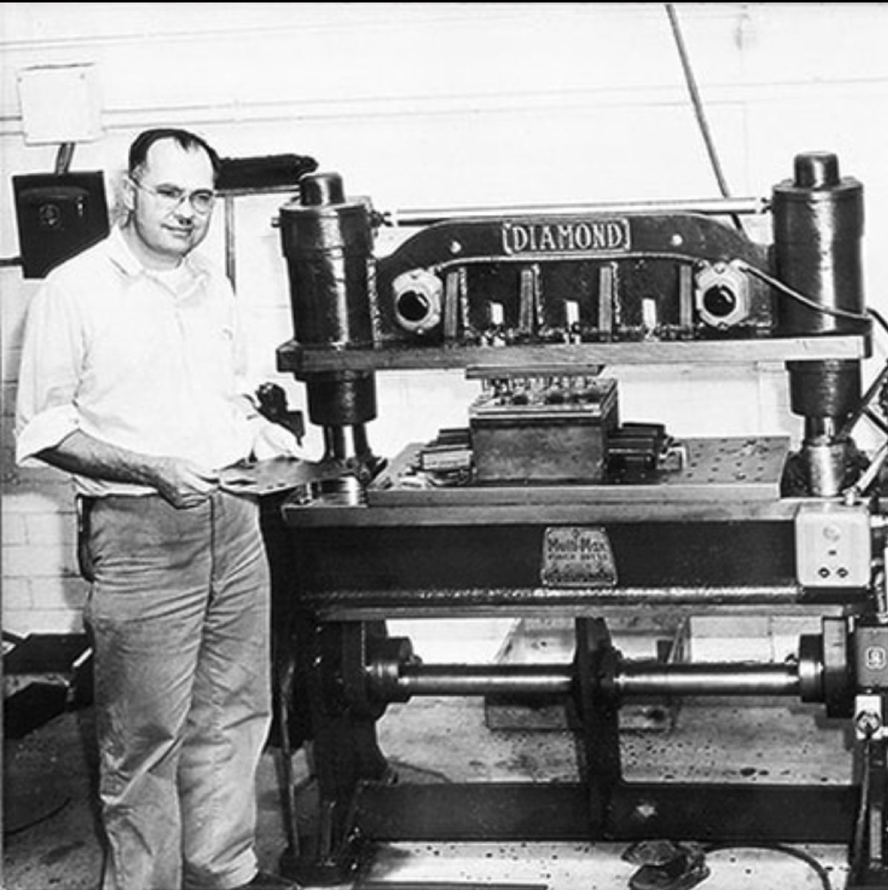
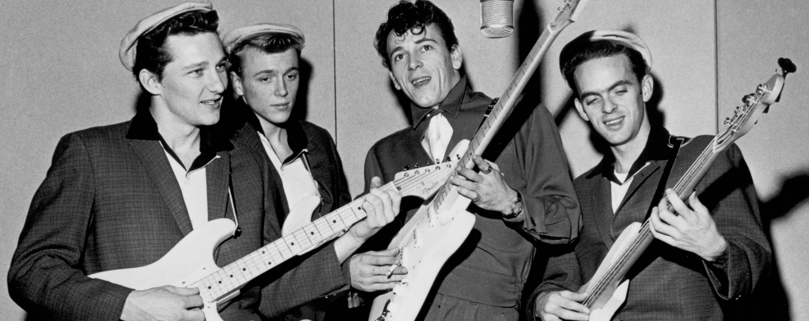

Serial numbers move
In early summer, serials move from the back tremolo plate to the neck plate.
- Custom gold — Eldon Shamblin
- Solid red — Bill Carson
Tuning up the Stratocaster…
GEARSHED Timeline — Vol.01
How one guitar, built in a small California shop in the 1950s, became the shape the world pictures when it hears the words electric guitar. Scroll to follow every detail in real-time 3D.
01 The Idea
By 1953, Fender was a scrappy seven-year-old company that had already shaken up the industry with the Telecaster and the Precision Bass. Its founder, Leo Fender, was a self-taught electronics tinkerer — not a serious musician.
He wasn’t trying to be radical. As a practical man, he simply wanted to build a better instrument. Work on new pickups and a new bridge was already under way by late 1952.

02 The Shape
As late as early 1953, the new guitar still looked a lot like a Telecaster. That spring, newcomer Freddie Tavares sketched a sleek body that borrowed the balanced, double-horned outline of the Precision Bass.
It fused Fender’s first two instruments into one. The same year, sales chief Don Randall gave it a name —
“Stratocaster.”

03 Comfort Contour
“Why not get away from a body that is always digging into your ribs?” — Rex Gallion, guitarist
The Telecaster’s squared-off slab dug into the player’s ribs and picking arm. A solid body has no sound chamber to protect — so why keep the hard edges?
Rounded edges, a deep belly cut on the back and a forearm contour on the front. In the words of the original ad, it was built to be “part of the player.”
04 Synchronized Tremolo
The first vibrato design flopped. Strings slid over individual rollers, and it sounded, in Bill Carson’s words, like “an amplified banjo with no sustain.” George Fullerton just called it terrible.
Leo scrapped the whole thing and started over. Inspired by a gram scale, he finished a new design in late 1953 — one where the entire bridge moves with the strings.


How it floats
Try it — push the arm
Leo imagined a subtle, steel-guitar shimmer. His over-engineered design could drop pitch by three half steps or more — and a decade later, players were using it for dive-bombs.
05 Three Pickups
Alnico 3 magnets with staggered pole pieces, set at different heights to even out the uneven output of the heavy string gauges of the day.
The three-way switch was meant to pick one pickup at a time. Players soon learned to balance the lever between the notches and blend two — the accidental “in-between” tones.
Try it — choose a pickup
Middle — plain, balanced, neutral.
06 Controls & Jack
One volume, two tones — wired only to the neck and middle pickups. The bridge pickup, Fender explained, “does not require additional tone modification.”
All the electronics mount to the pickguard and drop in with eight screws. The output jack sits angled on the face of the body, not on its side.
07 Headstock
Far curvier than the Telecaster’s or the Precision Bass’s, yet with every tuner on one side, easy to reach.
Its outline is widely credited to Paul Bigsby’s influence. A single round string retainer in 1954 gave way to a “butterfly” string tree in late 1956.
08 Sunburst
Don Randall insisted on an upscale look: a two-tone fade from a brownish-black Dark Salem at the edges to a golden Canary Yellow at the center.
It had a practical upside, too — hiding mismatched grain where two or three pieces of ash were glued together.

09 Launch

The response was lukewarm. Three years in, the Strat was still “not particularly well known,” and plenty of pros saw it as a gimmicky contraption. The world needed time to catch up.
10 Evolution
In early summer, serials move from the back tremolo plate to the neck plate.
Brittle pickguards, knobs and pickup covers switch to a more durable plastic. String holes in the trem plate go from round to oval.
Mid-year, bodies move to cheaper, easier-to-work alder. By late 1956, magnets go Alnico 5 and the butterfly string tree arrives.

On December 1, a 21-year-old Buddy Holly plays “That’ll Be the Day” and “Peggy Sue” on a Strat. Around now, George Fullerton creates the first official custom color: Fiesta Red.

A red band joins the sunburst. The Jazzmaster arrives the same year, ending the Strat’s brief reign at the top of the line.
The one-piece maple neck gives way to a thick rosewood fingerboard glued on top — the “second incarnation.” In London, Hank Marvin gets his Fiesta Red Strat.